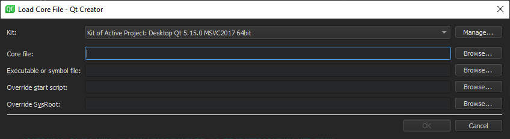
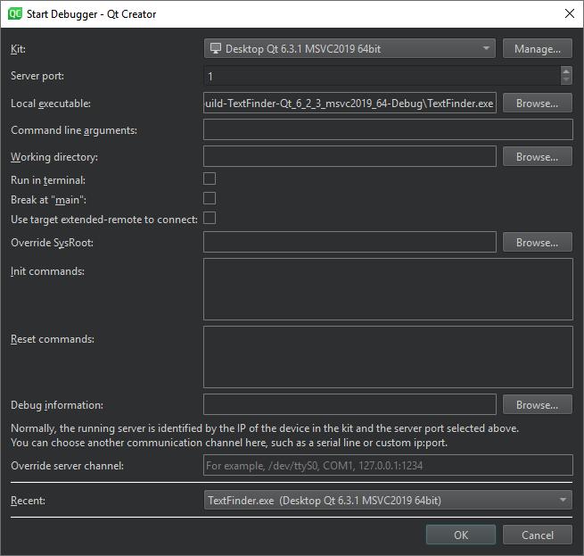

Launching the Debugger
To start an application from an open project under the control of a debugger, select the  (Start Debugging of Startup Project) button or press F5.
(Start Debugging of Startup Project) button or press F5.
Qt Creator checks whether the compiled program is up-to-date, and rebuilds and deploys it if the Always build project before deploying it and Always deploy before running options are selected in the Build and Run options. To debug the program without deploying it, select Debug > Start Debugging > Start Debugging Without Deployment.
The debugger then takes over and starts the program with suitable parameters.
Note: Starting a C++ program in the debugger can take a long time, typically in the range of several seconds to minutes if complex features are used.
Launching the Debugger in Different Modes
The debugger plugin can run the native debuggers in various operating modes depending on where and how the debugged process is started and run. Some of the modes are only available for a particular operating system or platform.
In general, F5 and the Start Debugging of Startup Project button are set up in a way to start the operating mode that is commonly used in a given context. So if the current project is set up as a C++ application using the MinGW toolchain targeting desktop Windows, the GDB engine will be started in Start Internal mode. If the current project is a QML application using C++ plugins, a "mixed" QML/C++ engine will be started, with the C++ parts being handled by GDB and GDB server remote debugging.
Change the run configuration parameters (such as Run in Terminal) in the run settings of the project, or select options from the Debug > Start Debugging menu to select other modes of operation.
The debugger can run in the following modes:
- Start Internal to debug applications developed inside Qt Creator such as a Qt based GUI application.
- Start External to start and debug processes without a proper Qt Creator project setup, either locally or on a remote machine.
- Attach to debug processes already started and running outside Qt Creator, either locally or on a remote machine.
- Core to debug crashed processes on Unix.
- Post-mortem to debug crashed processes on Windows.
Launching in Start Internal Mode
Start Internal mode is the default start mode for most projects, including all projects using a desktop Qt version and plain C++ projects.
If you need a console window to operate your application, for example because it accepts console input from the user, go to Projects > Run Settings and select the Run in terminal check box.
To launch the debugger in Start Internal mode, click the Start Debugging button for the active project.
You can specify breakpoints before or after launching the debugger. For more information, see Setting Breakpoints.
Launching in Start External Mode
You can debug any executable already present on your local or on a remote machine without using a project. You specify a build and run kit that identifies the device to debug the application on.
While this mode does not strictly require a project to be opened in Qt Creator, opening it makes setting breakpoints and stepping through the code easier.
To start and debug an external application:
- Select Debug > Start Debugging > Start and Debug External Application.

- In the Kit field, select the build and run kit to use for building the project.
- In the Local executable field, specify the path to the application executable on the local machine.
- In the Command line arguments field, specify command line arguments to be passed to the executable.
- In the Working directory field, specify the working directory. It defaults to the directory of the build result.
- Select the Run in terminal check box for console applications.
- Select the Break at "main" check box to stop the debugger at the main function.
- In the Debug information field, specify the location for storing debug information. You cannot use an empty path.
- In the Recent field, you can select a recent configuration to use.
Launching in Attach Mode
You can attach the debugger to applications that are already running or instruct the debugger to attach to an application when it starts.
Attaching to Running Applications
To attach the debugger to an application already running on your local or on a remote machine:
- Select Debug > Start Debugging > Attach to Running Application.

- In the Filter field, enter a string to filter processes by their process ID or name.
- Select a process in the list, and then select Attach to Process to start debugging.
To refresh the list of running processes, select Update List.
To terminate the selected process, select Kill Process.
While this mode does not strictly require a project to be opened in Qt Creator, opening it makes setting breakpoints and stepping through the code easier.
You can specify breakpoints before or after attaching the debugger to the application. For more information, see Setting Breakpoints.
Attaching to Processes when They Start
To instruct the debugger to watch an application process and to attach to it when it starts:
- Select Debug > Start Debugging > Attach to Unstarted Application.

- In the Kit field, select the build and run kit to use for building the project.
- In the Executable field, specify the path to the application executable.
- Select the Reopen dialog when application finishes check box to return to this dialog when the application is closed.
- Select the Continue on attach check box to instruct the debugger to keep the application running after attaching to it.
- Select Start Watching to wait for the application process to start.
Launching in Core Mode
The Core mode is used to inspect core files (crash dumps) that are generated from crashed processes on Linux and Unix systems if the system is set up to allow this.
To enable the dumping of core files on a Unix system, enter the following command in the shell from which the application will be launched:
ulimit -c unlimited
To launch the debugger in the core mode:
- Select Debug > Start Debugging > Load Core File.

- In the Kit field, select a build and run kit that was used for building the binary for which the core file was created. If the core file stems from a binary not built by Qt Creator or a process not initiated by Qt Creator, select a kit that matches the setup used as closely as possible, in respect to the specified device, tool chain, debugger, and sysroot.
- In the Core file field, specify the core file to inspect.
- In the Executable of symbol file field, specify a file that contains debug information corresponding to the core file. Typically, this is the executable file or a
.debugfile if the debug information is stored separately from the executable. - In the Override start script field, specify a script file to run instead of the default start script.
Also in this mode, using a properly configured project containing the sources of the crashed program is not strictly necessary, but helpful.
Launching in Post-Mortem Mode
The post-mortem mode is available only on Windows, if you have installed the debugging tools for Windows.
The Qt Creator installation program asks you whether you want to register Qt Creator as a post-mortem debugger. To change the setting, select Tools > Options > Debugger > General > Use Qt Creator for post-mortem debugging.
You can launch the debugger in the post-mortem mode if an application crashes on Windows. Click the Debug in Qt Creator button in the error message that is displayed by the Windows operating system.
Remote Debugging
Qt Creator provides very easy access to remote debugging.
In general, the remote debugging setup consist of a probe running on the remote machine and a counterpart running on the host side. The probe is either integrated into the running process (e.g. for QML debugging) or runs a separate process (e.g. when using GDB server on embedded Linux). The host side typically consists of Qt Creator itself, often with the help of an external process, such as GDB or CDB.
While this setup might look daunting, it is mostly invisible to the user of Qt Creator. To start debugging on a remote target with the necessary helper processes running, select the corresponding kit in Projects > Build & Run, and then select a function to start remote debugging in the Debug > Start Debugging menu.
Special use cases, such as attaching to a running process on the target, might still require manual setup.
Using GDB
When debugging on a target supported by GDB server, a local GDB process talks to a GDB server running on the remote machine that controls the process to be debugged.
The GDB server process is started on the remote machines by passing a port number and the executable:
gdbserver :1234 <executable>
It then typically responds:
Process bin/qtcreator created; pid = 5159 Listening on port 1234
On the local machine that runs Qt Creator:
- Select Debug > Start Debugging > Attach to Running Debug Server.

- In the Kit field, select the build and run kit to use for building the project.
- In the Server port field, enter the name of the remote machine and the port number to use.
- In the Local executable field, specify the path to the application executable on the local machine.
- In the Command line arguments field, specify command line arguments to be passed to the executable.
- In the Working directory field, specify the working directory. It defaults to the directory of the build result.
- Select the Run in terminal check box for console applications.
- Select the Break at "main" check box to stop the debugger at the main function.
- In the Server start script field, specify a script file to run when the server starts.
- In the Debug information field, specify the location for storing debug information. You cannot use an empty path.
- In the Override server channel field, specify a communication channel to use, such as a serial line or custom port.
- In the Recent field, you can select a recent configuration to use.
- Select OK to start debugging.
Using CDB
In remote mode, the local CDB process talks to a CDB process that runs on the remote machine. The process is started with special command line options that switch it into server mode. The remote CDB process must load the Qt Creator CDB extension library that is shipped with Qt Creator:
- Install the Debugging Tools for Windows on the remote machine. The installation folder contains the CDB command line executable (
cdb.exe). - Copy the Qt Creator CDB extension library from the Qt installation directory to the a new folder on the remote machine (32 or 64 bit version depending on the version of the Debugging Tools for Windows used):
\lib\qtcreatorcdbext32\qtcreatorcdbext.dll(32 bit)\lib\qtcreatorcdbext64\qtcreatorcdbext.dll(64 bit)
- Set the _NT_DEBUGGER_EXTENSION_PATH environment variable to point to that folder.
- To use TCP/IP as communication protocol, launch remote CDB as follows:
cdb.exe -server tcp:port=1234 <executable>
- On the local machine running Qt Creator, select Debug > Start Debugging > Attach to Remote CDB Session.
- In the Connection field enter the connection parameters. For example, for TCP/IP:
Server:Port
If you chose some other protocol, specify one of the alternative formats:
tcp:server=Server,port=Port[,password=Password][,ipversion=6] tcp:clicon=Server,port=Port[,password=Password][,ipversion=6] npipe:server=Server,pipe=PipeName[,password=Password] com:port=COMPort,baud=BaudRate,channel=COMChannel[,password=Password] spipe:proto=Protocol,{certuser=Cert|machuser=Cert},server=Server,pipe=PipeName[,password=Password] ssl:proto=Protocol,{certuser=Cert|machuser=Cert},server=Server,port=Socket[,password=Password] ssl:proto=Protocol,{certuser=Cert|machuser=Cert},clicon=Server,port=Socket[,password=Password]
- Click OK to start debugging.